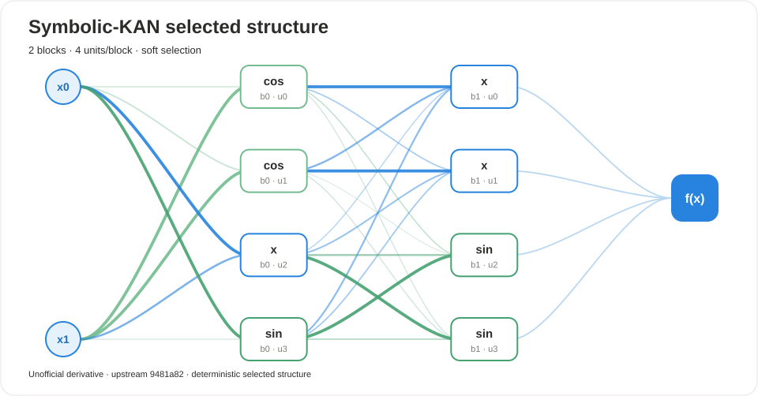

UNOFFICIAL · ATTRIBUTED · AUDITABLE
Symbolic-KAN audit report
Deterministic structure, native candidate evidence, and export metadata.
2blocks
8active units
nohardened
Selected structure

Expression
(((1.77039*(cos(1.8745*(-0.0345029*(x_0) + -0.202616*(x_1) + -0.0310279) + 0)) + -0.0233974)) + (2.00615*(2.00615*(-0.38667*((1.77039*(cos(1.8745*(-0.0345029*(x_0) + -0.202616*(x_1) + -0.0310279) + 0)) + -0.0233974)) + -0.196866*((1.99399*(cos(2.04399*(-0.308088*(x_0) + -1.10964*(x_1) + -0.125768) + 0)) + -0.130624)) + 0.0648348*((1.62137*(1.62137*(-0.290424*(x_0) + -0.168155*(x_1) + -0.10106) + 0) + -0.101558)) + -0.174429*((2.00402*(sin(1.99889*(0.432106*(x_0) + 0.0233527*(x_1) + -0.134607) + 0)) + -0.12641)) + -0.0356134) + 0) + -0.108466)) + (((1.99399*(cos(2.04399*(-0.308088*(x_0) + -1.10964*(x_1) + -0.125768) + 0)) + -0.130624)) + (2.01194*(2.01194*(-0.112572*((1.77039*(cos(1.8745*(-0.0345029*(x_0) + -0.202616*(x_1) + -0.0310279) + 0)) + -0.0233974)) + -0.416399*((1.99399*(cos(2.04399*(-0.308088*(x_0) + -1.10964*(x_1) + -0.125768) + 0)) + -0.130624)) + 0.159414*((1.62137*(1.62137*(-0.290424*(x_0) + -0.168155*(x_1) + -0.10106) + 0) + -0.101558)) + -0.121911*((2.00402*(sin(1.99889*(0.432106*(x_0) + 0.0233527*(x_1) + -0.134607) + 0)) + -0.12641)) + -0.0738066) + 0) + -0.156294)) + (((1.62137*(1.62137*(-0.290424*(x_0) + -0.168155*(x_1) + -0.10106) + 0) + -0.101558)) + (1.78197*(sin(1.83686*(0.0310531*((1.77039*(cos(1.8745*(-0.0345029*(x_0) + -0.202616*(x_1) + -0.0310279) + 0)) + -0.0233974)) + -0.00159743*((1.99399*(cos(2.04399*(-0.308088*(x_0) + -1.10964*(x_1) + -0.125768) + 0)) + -0.130624)) + -0.0843682*((1.62137*(1.62137*(-0.290424*(x_0) + -0.168155*(x_1) + -0.10106) + 0) + -0.101558)) + -0.180529*((2.00402*(sin(1.99889*(0.432106*(x_0) + 0.0233527*(x_1) + -0.134607) + 0)) + -0.12641)) + -0.139811) + 0)) + -0.140037)) + (((2.00402*(sin(1.99889*(0.432106*(x_0) + 0.0233527*(x_1) + -0.134607) + 0)) + -0.12641)) + (2.0619*(sin(2.02291*(-0.0567535*((1.77039*(cos(1.8745*(-0.0345029*(x_0) + -0.202616*(x_1) + -0.0310279) + 0)) + -0.0233974)) + 0.0625978*((1.99399*(cos(2.04399*(-0.308088*(x_0) + -1.10964*(x_1) + -0.125768) + 0)) + -0.130624)) + -0.72513*((1.62137*(1.62137*(-0.290424*(x_0) + -0.168155*(x_1) + -0.10106) + 0) + -0.101558)) + -0.186957*((2.00402*(sin(1.99889*(0.432106*(x_0) + 0.0233527*(x_1) + -0.134607) + 0)) + -0.12641)) + -0.0806339) + 0)) + -0.141112))
Selected units
| Block | Unit | Primitive | Edge | Status |
|---|---|---|---|---|
| 0 | 0 | cos | 1 | active |
| 0 | 1 | cos | 1 | active |
| 0 | 2 | x | 0 | active |
| 0 | 3 | sin | 1 | active |
| 1 | 0 | x | 0 | active |
| 1 | 1 | x | 0 | active |
| 1 | 2 | sin | 0 | active |
| 1 | 3 | sin | 1 | active |
Metadata
{
"profile": "tutorial",
"seed": 42
}Scientific-integrity boundary. This report was produced by an unofficial derivative package. It is not an upstream paper result and does not imply endorsement by the original authors.